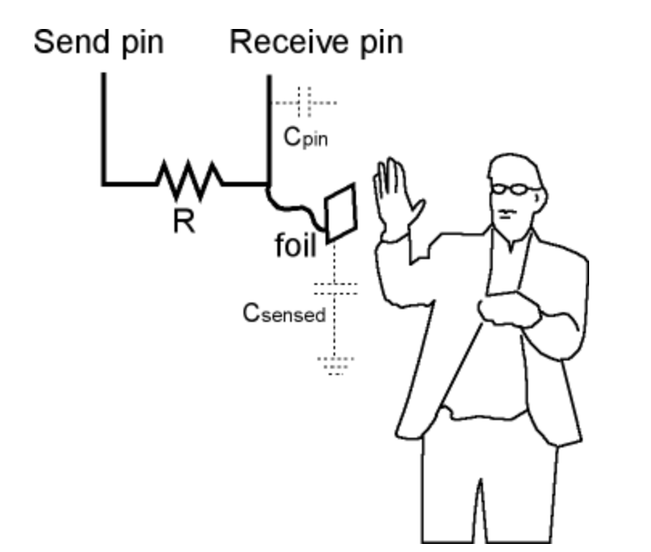
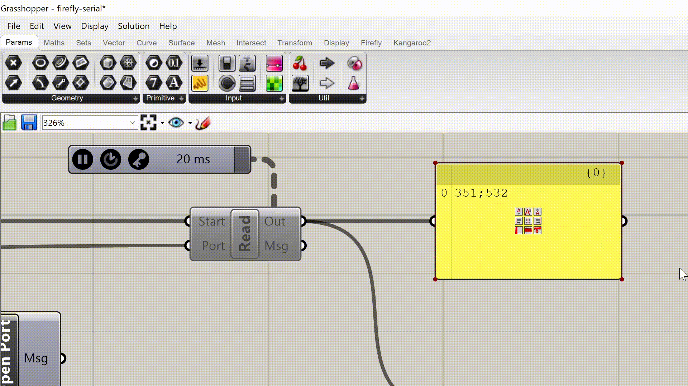

sensors & position
making!
ideation & setup
Kobakant's how to get what you want was totally overwhelming (in a good way), I felt like I got slapped in the face with ~a decade of really great creative work. I spent a good amount of time just looking through all of the examples. I also ended up watching Hannah Perner-Wilson's Art&&Code talk from early this year which was a an interesting reflection on the recent turn in industry towards e-textiles and what that means for Hannah's personal practice. Some of my favorite sensors were ones that incorporated unconventional body parts for sensing (e.g. the knobbly knee sensor or the beaded sway sensor). These reminded me a bit of Myer's molecular embodiment argument; perhaps the prosthetic trope becomes muddied when the interaction is a more awkward. In the context of this homework, any sensor I make will probably be pretty coarse, so I decided to lean into that. In the end, I settled on a facemask with fabric buttons which you have to press to modulate facial expression on a model. Like Topobo, my intent is to generate a playful interaction that might have use/function "with the power turned off".The other key setup step was to get my hand on a Windows machine! I could have used one in lab, but I figured I should take the time now to get things setup on my computer since many digifab things are Mac unfriendly. So, I installed Windows using Bootcamp which was a pretty painless process, though it took a bit of time to install Windows, then install all the needed software on the new partition, etc. But I am now happy to help others with this if they want to and run into problems!
making the sensor
I decided to use capacitive touch sensing. The Arduino CapSense library let's you turn two Arduino pins into a capacitive sensor:

My finger and conductive surface - in this case conductive fabric - form a capacitor, and the library measures the timing of send/recieve pulses to sense touch, making it a very straightforward setup. I opted for capacitive sensing because it can measure proximity as well as different 'kinds' of touch (hard press vs light touch, etc). This gives me a few different inputs for the interaction; I wanted to modulate facial expression on a model, so this gave me opportunity for more variation with only two buttons. In the end I only measured touch, but it was nice to have options. I sewed conductive fabric onto a face mask, roughly in the location of dimples. I used 1 megaohm resistors for the capacitive sensing circuit and wound the resistor's ends to make them sewable, and put them on the outside so they wouldn't scratch my face:


I tested all the connections and was happy with how durable they seemed.
talking to firefly
My Arduino sketch sends the capacitive sensing values over serial. In firefly, I use ageneric
serial read component to accept data. This component is driven by a Trigger on
a 20ms interval.

My Rhino/Grasshopper geometry is super simple: a few circles make a smiley face, and a curve for the mouth. By default, the face shows a frown. When both buttons on the mask are pressed simultaneously, the curve is mirrored to turn into a smile:
You can see in the video that I just ran wire from the mask connections to the Arduino sitting on my desk for testing. I had plans to then make a more realistic mouth model, and to have a more continuous interpolation between frowns, smiles, and everything in between - but the smiley is kind of funny to me, too.